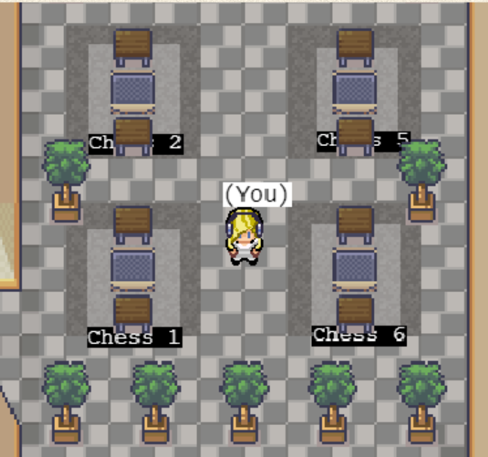
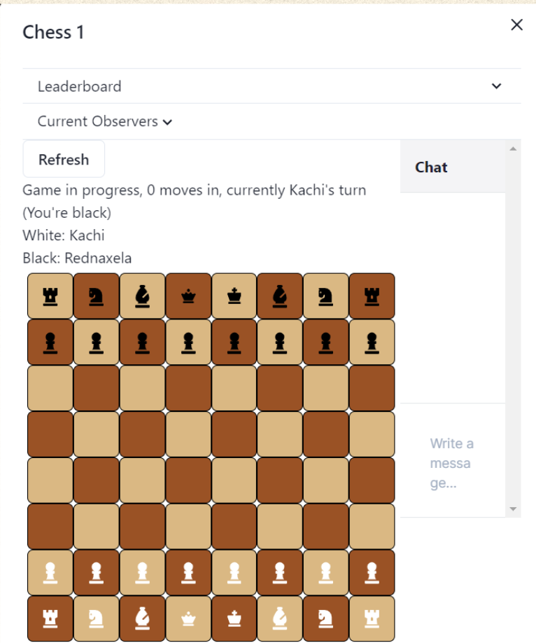
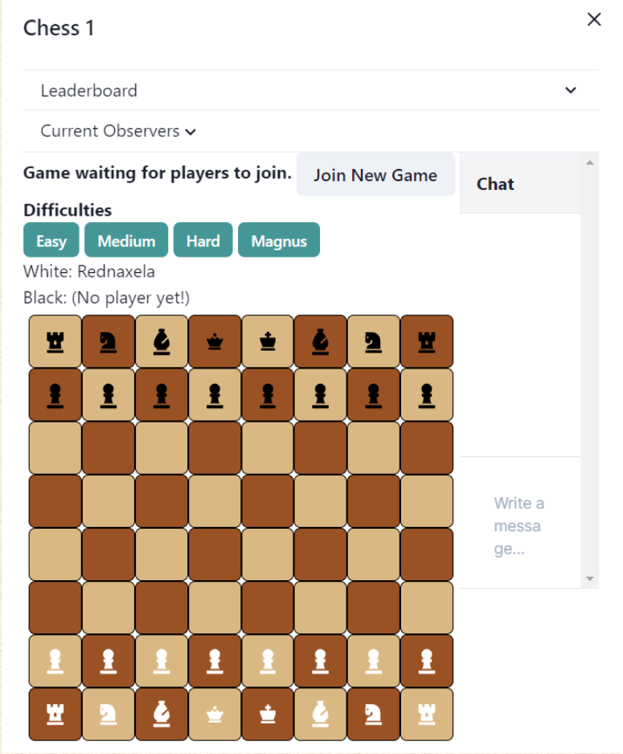

Chess Garden
Genres: Typescript, Node.js, Object-Oriented Programming, REST APIs
For this project, I worked with a team of 4 engineers to develop the front and backend implementations of a chess
garden in Northeastern's Covey.Town.
The final Chess Garden implementation looked like this:

When you sat down at one of the tables, someone else could walk over and sit down to join the game. At that point,
the Chess game would begin. The menu had a leaderboard for previous winners, a chat for spectators, and integrated
seamlessly with Covey.Town video call capabilities.

A particularly exciting part of our implementation is the single-player functionality! We implemented
a backend API calls to Stockfish, which then, based on the difficulty, made a move with a certain strategic
depth.

Upon a player or bot winning the game, the leaderboard is updated and the game resets for the next player.